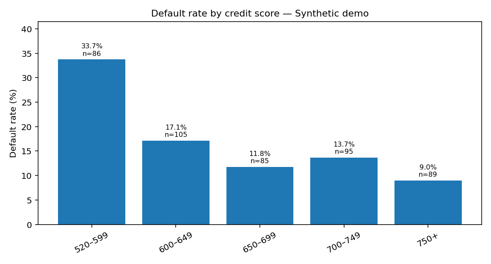

SYNTHETIC DATA / REPRODUCIBLE

CASE STUDY 001 / FINANCIAL ANALYTICS
Loan Default Risk Analysis
Explored 460 sample loan applications to understand how credit score, debt-to-income ratio, loan purpose, and employment relate to observed defaults. Includes reproducible Pandas analysis, SQL, and an interactive dashboard.
Demo metrics use generated synthetic data and are not real underwriting outcomes.